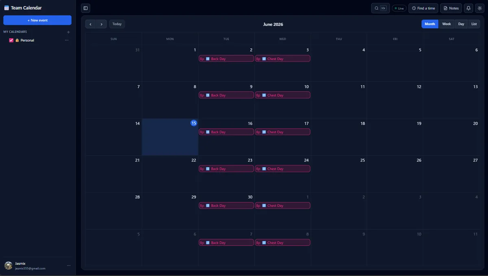
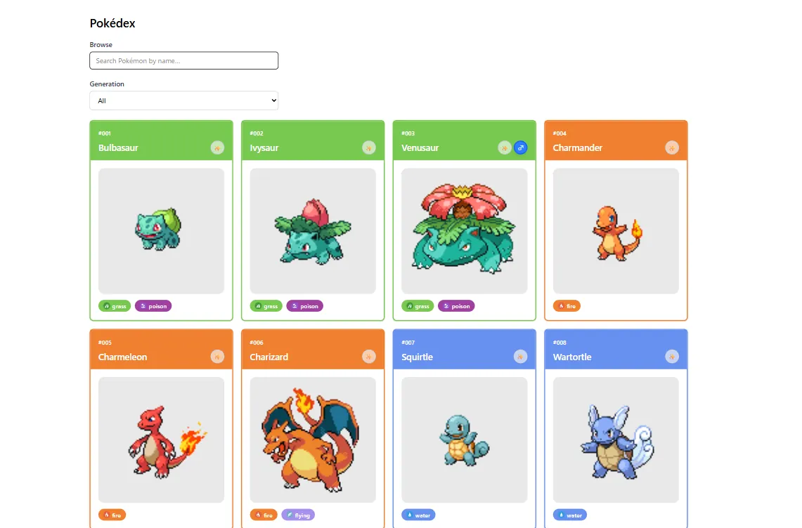
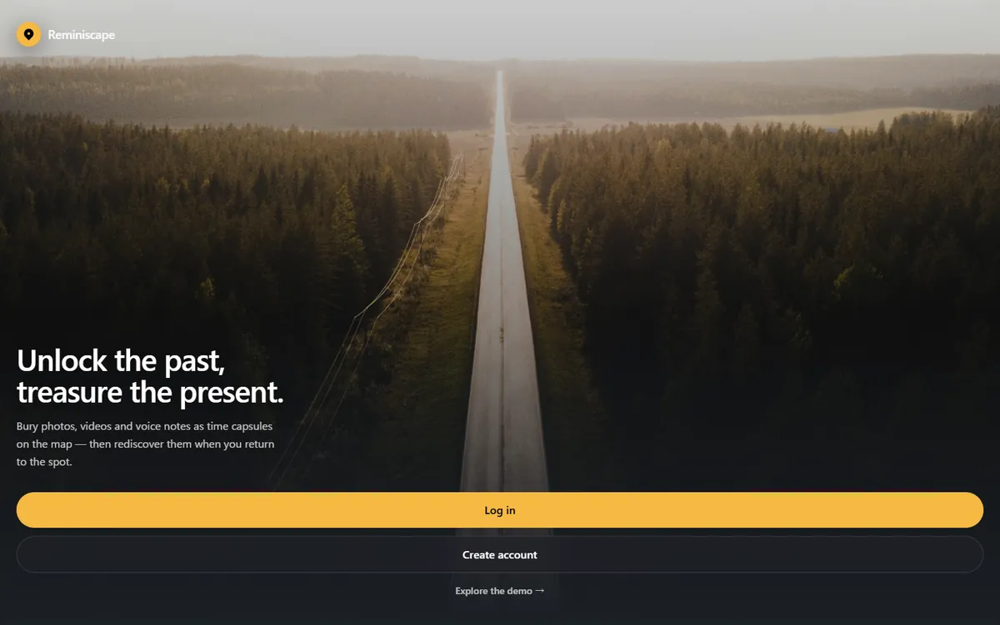
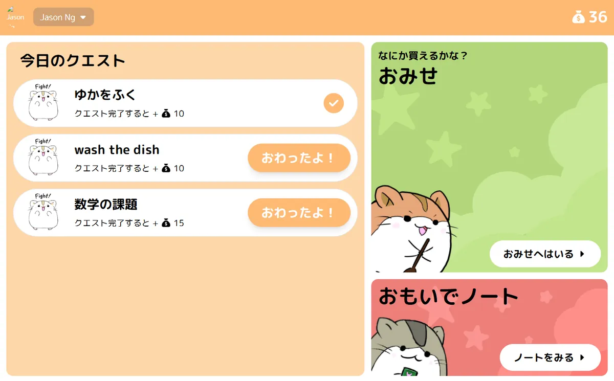
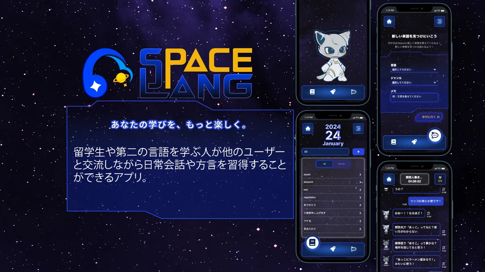

What exists today, rebuilt from source: paper #ECE5D6, ink #1C1A16, clay #B0432B, Fraunces display + Inter body + Space Mono labels, rotating descriptor, marquee band. Competent — and the exact fingerprint of a 2026 generated portfolio.
Dark-first, because oxide red on near-black reads as an instrument warning lamp — an emitted signal — where on paper white it reads as print ink and competes with the display type. Ground is #0B0B0B, not pure black, so hairlines and the grain layer stay visible.
暗色ベース。オキサイドレッドは近黒の地でこそ「警告灯」として立つ。
Same ramp, inverted assignment. Foundations only — pages are designed dark-first. Signal stays #E5390A, but light mode uses it at 100% only on rules and redaction; never as type under 24px (3.8:1 on bone).
The beige WebGL wave goes — but the ground is not dead. Two CSS layers, one scroll input, no shader and no canvas: the 6px halftone screen drifts down at 0.06× scroll, the 96px column rules slide sideways at −0.12× (so the page reads as film moving behind a fixed frame), and that is all — no rail, no marker, no progress read-out. The ground moves; the page carries the information. All transform/background-position only — compositor-cheap, 60fps, and it freezes to a static print under reduced motion. The panel below is live: scroll this canvas.
Type only, no drawn mark: a bone rule box around JN in Archivo 800 / wdth 112, with the signal bar welded to its right edge — an accession stamp, the thing an archive presses onto a file. It survives to 16px because it is a rectangle, two letters and a colour bar; the bar is also the only place the signal appears in the header.
If you pushed back on this direction, the single biggest change I'd make: go light-first and shrink the display type by half — a bone-white spec-sheet ground with 96px heads reads as a real engineering document rather than a designed one, and it makes the archive feel like something you'd file rather than something you'd frame. It's the quieter, more credible version of the same system; I chose dark-first because your work is emotional (memory, regret, growth) and the black ground gives that weight a room to sit in.
Title page, not a dashboard: one 280px word, everything else 11px. The ledger strip carries hours, records, awards and reviews written, printed at their final values — no counting, no loader. Every record has a review; that's the claim the number makes. The only entrance is the wordmark resolving out of mono glyphs in 420ms (board 02.7).
Deliberately cramped against the hero's emptiness: a real table, 8 rows, every column a field an engineer would actually want. Thumbnails are 88px contact-sheet crops, not cards: greyscale at rest, and on row hover they take their colour back, gain a 1px bone edge and grow 1.12× from their centre — about 5px of growth on each side against a 20px gutter, so the crop stays clear of the title. The hovered record is the only living thing on screen. Sort and filter get their own control bar between the head and the table, so the header meta stays pure metadata. Client work is absent by design and the table says so.

Calendar App NEXT.JS · TAILWIND · FIREBASE 2026 4 —
Pokédex REACT · JS · TAILWIND 2025 8 —
Reminiscape NEXT.JS · SCSS · FIREBASE · MAPBOX 2024/11—2025/02 300—400 CORPORATE PRIZE
Tiny Taskers NEXT.JS · TS · FIREBASE · FIGMA 2024 83 —
SpaceLang NEXT.JS · SCSS · FIREBASE 2023/10— 103 DESIGN PRIZE / IMAKE PRIZE{{ mLearnt }}
{{ mRegret }}
{{ mGrowth }}
The record opens in a modal over a dimmed index — its own route, focus trapped, ESC to close. Mechanic 1, the hidden regret: LEARNT and GROWTH are open; REGRET is sealed under a solid signal fill — one opaque plate, with the ragged bars and halftone sitting on top as texture only, so no gap can ever leak a glyph — until you press and hold for 600ms. Choosing to look at your own failure should cost a deliberate gesture. Block-wipe reveal, no fade. The block below is interactive.
Rebuilt from a poster into a section that pays for itself. The 160px title and 168px of air are gone; each concept now carries the one thing a reader should take from it — team lead and speed — stated in the signal colour before any detail. Still opens the same modal.
Unpacked for a five-second read. Four figures sit above everything else, the 18-row stack table is cut to 7 grouped rows with the rest as one mono line, and the five-year timeline is three phases. Nothing was deleted from the site — the detail lives in the record modals, where someone who wants it will look.
A multilingual frontend engineer in Osaka who cares how an interface feels under the hand — clean structure, physical motion.
Contracting on corporate promotional sites today. Looking for a product company where I can own features end-to-end, in Japan or overseas.
Cut from 520px to 420px, so the headline and the action sit in the same glance instead of being separated by 200px of nothing. One filled button — MAIL — with the CV next to it; the three profiles drop to text links, and the build credit is one line instead of three.
No loading screen, no counter, no 900ms curtain. The page paints complete on the first frame; the only entrance is the wordmark resolving out of mono glyphs in 6 discrete steps of 70ms — steps(6,end), no easing, no movement, no fade. It reads as a terminal locking onto a record rather than an animation playing. Route changes run the same resolve at 3 steps of 60ms on the heading only, so the layout never moves between pages.
Two complete locales, one at a time. Nothing is a gloss: switching to JP replaces every string, including labels and award names, and the display face changes with it — Zen Kaku Gothic New 900 for headings, Zen Old Mincho for the single concept line, IBM Plex Mono kept for data because numbers and stack names stay Latin in both locales. JP headings run 0.86 line-height and −0.02em (looser than the Latin −0.045em; CJK needs air the Latin doesn't), and JP body sits at 1.9 so both locales lock to the same 8px grid.
企業レベルの開発フローを前提に環境をゼロから構築。Git運用・コンベンショナルコミット・Husky、そしてFirebaseの統合により、デザインだけでないアプリとして成立させられた。
Whatever was here was never filed, or has been renumbered. The archive only keeps what it can show a review for.
Dropped: the 7-column table (no horizontal scroll), thumbnails in the index, the contact-sheet image in the record, the stack bar axis ticks, the hero's ledger strip as a row. Restructured: index rows become 3-line stacks with hours right-aligned; the ledger becomes a 2×2 register; postmortem fields stack and REGRET's redaction becomes tap-and-hold on a full-width block; the nav collapses to a single line with the EN/JP toggle. Labels never shrink below 11px.
Frontend engineer in Osaka. This site is the archive — every record carries its own honest review.
Somewhere to leave a memory tied to a real place, found again when you return.
Solo, end-to-end. Enterprise-style Git flow, Firebase data model, Mapbox time-capsules.
CORPORATE PRIZE. My most complete app to date.
Built an enterprise-level dev flow from scratch; Firebase made it a real app, not a front end.
Proof I can take a product from idea to working app alone.
Clean interfaces, motion that feels physical, interactions that feel good under the hand. Contracting on promo sites; heading for a product company.